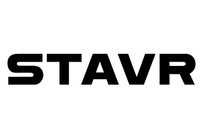

Распродажа садовой техники прямо сейчас в магазине STAVR-PRO 🔥

MITEX 2026 · Россия · Стенд 8F501
Карточка проверена 10 ноября 2026, 09:25 · Источник ↗ · Снимок оригинальной карточки ↗
STAVR – российская торговая марка электроинструмента, с увеличенным ресурсом. Начиная с 2008 года российские специалисты разрабатывают, производят и осуществляют поставки электроинструмента во все регионы России и страны Ближнего Зарубежья. Появление торговой марки STAVR на рынке электроинструмента и оборудования было обусловлено наличием огромного, постоянно растущего спроса на русскоязычный инструментальный бренд в среднем ценовом сегменте с профессиональным исполнением корпуса и внутренних агрегатов. Основным отличием данного инструмента является его увеличенный ресурс, позволяющий обеспечить выполнение любых поставленных перед ним задач в суровых условиях строительных процессов. Под маркой STAVR в настоящий момент выпускаются: аккумуляторные дрели-шуруповерты, сетевые дрели, перфораторы и отбойные молотки, шлифовальные машины, лобзики, пилы, рубанки, сварочное и компрессорное оборудование, аппараты для сварки пластиковых труб, деревообрабатывающие и заточные станки, торцевые пил
Контакты STAVR Телефон: +7 (499) 705-50-00 E-mail: info@stavr-tools.ru Адрес: 115054, Россия, Москва, ул. Малая Пионерская, д. 37, стр. 1 Веб-сайт: https://ставр.рф/ E-mail: info@stavr-tools.ru Телефон: +7 (499) 705-50-00


В доступной карточке нет видео или документов. Смотрите сайт участника.
MITEX ⭐ Новинки
MITEX ⭐ Выставки прошлых лет
Выставки прошлых лет
Новинки Бензогенераторы STAVR - мобильная энергия для любых задач! Новые аккумуляторные дрели-шуруповёрты STAVR из линейки 18V UNI-M! Аккумуляторные гайковёрты STAVR! Аккумуляторная дрель-шуруповёрт STAVR SDD 16BL-2K Новинки: шлифовальные машины для стен STAVR Клеевой пистолет СТАВР ПК-11/190
Бензогенераторы STAVR - мобильная энергия для любых задач! Генераторы STAVR оснащены четырёхтактным OHV-двигателем с воздушным охлаждением, который обеспечивает бесперебойную работу до 10 часов без дозаправки — отличный вариант для дачи, стройки или мастерской. В линейке представлены как лёгкие инверторные модели с пониженным уровнем шума, так и более мощные с расширенным функционалом. Удобная панель управления с чёткими индикаторами и кнопками, а также LCD-дисплеем и системой защиты от перегрузки и пониженного уровня масла позволяют легко контролировать работу генератора. Усиленная рамная конструкция гарантирует долговечность и устойчивость. Модели SEG 3500E, 6500EA и 8500EA дополнительно укомплектованы модулем AVR, который стабилизирует напряжение и оберегает подключённую технику. А благодаря электростартеру и пульту дистанционного управления в генераторах SEG 3800Ei, 6500EA и 8500EA запуск становится максимально комфортным. Для лёгкой транспортировки предусмотрены прочные колёса и складная ручка.
Новые аккумуляторные дрели-шуруповёрты STAVR из линейки 18V UNI-M! Аккумуляторные дрели-шуруповёрты STAVR из линейки UNI-M — это высокоэффективные инструменты для решения самых разнообразных задач. Модели оснащены бесщеточными двигателями, что гарантирует не только долговечность, но и высокую производительность, особенно при интенсивных нагрузках. Удобство в эксплуатации обеспечивается благодаря наличию подсветки для работы в условиях плохой видимости, быстрозажимному патрону, магнитному держателю для оснастки и реверсу для легкого извлечения сверла. Каждая модель этой линейки отличается регулируемым крутящим моментом, который позволяет точно настроить силу затяжки для разных типов крепежа, и переключателем скоростей, что обеспечивает максимальную универсальность при работе с различными материалами. Дополнительная боковая рукоятка помогает держать инструмент в нужном положении, повышая контроль и комфорт при длительном использовании. Особое внимание стоит уделить моделям STAVR SHD 18BLHD и STAVR SHD 18BLHD-2K, которые благодаря своим выдающимся характеристикам рекомендуются также для бурения льда с использованием специализированных шнеков. - Дрель-шуруповёрт ударная аккум. 18V UNI-M STAVR SHD 18BLHD-2K - Дрель-шуруповёрт ударная аккум. 18V UNI-M STAVR SHD 18BLHD
Аккумуляторные гайковёрты STAVR! STAVR открывает новую страницу в своей истории и представляет первые модели ударных гайковёртов! Эти мощные и надежные инструменты станут незаменимыми помощниками как для профессионалов, так и для домашних мастеров. Гайковёрты STAVR оснащены современными бесщеточными двигателями (BL motor), которые обеспечивают высокую производительность и долгую работу на одном заряде. Высокий крутящий момент моделей линейки позволяет с лёгкостью справляться с крепежами разной сложности. Теперь вам не нужно прилагать лишние усилия – гайковерт сделает всю тяжелую работу за вас. Благодаря функции "AUTO STOP" вы можете не бояться перетянуть или повредить крепеж. Инструмент автоматически остановит работу при необходимости, обеспечивая аккуратность и точность. А встроенная светодиодная подсветка создаст комфортные условия даже при слабом освещении. Продуманная универсальность каждой модели удивляет. Гайковёрты STAVR одинаково эффективны с болтами М8-М22 и саморезами длиной до 300 мм. Разные режимы работы и гибкие настройки мощности позволяют легко адаптировать инструмент под конкретные задачи – будь то работа с деревом, металлом или другими материалами. Компактный корпус и небольшой вес делают использование гайковёртов удобным, а прорезиненные вставки на корпусе защищают инструмент от повреждений. Все модели оснащены клипсой для крепления на пояс, что особенно оценят мастера, работающие на высоте. - Шуруповёрт ударный аккум. 18V UNI-M STAVR SID 18BL-230V-1K - Шуруповёрт ударный аккумуляторный 18V UNI-M STAVR SID 18BL-230V - Гайковёрт ударный аккумуляторный 18V UNI-M STAVR SWI 18BL-650V - Гайковёрт ударный аккумуляторный 18V UNI-M STAVR SWI 18BL-380V
Аккумуляторная дрель-шуруповёрт STAVR SDD 16BL-2K Нужен надёжный шуруповёрт с двумя аккумуляторами в комплекте? ? Модель STAVR SDD 16BL-2K - отличный выбор ⭐ ✅Дрель-шуруповёрт аккумуляторная STAVR SDD 16BL-2K — это надёжный инструмент, который станет незаменимым помощником в любом доме или на работе. Оснащенная бесщеточным двигателем, эта дрель обеспечивает высокий КПД и долгий срок службы, а также защиту от перегрузки и экономичный расход заряда. ✅С максимальным крутящим моментом 34 Н·м и диаметром сверления до 42 мм, она легко справляется с различными задачами, включая заворачивание крепежа и сверление. Металлический патрон диаметром 1-10 мм надежно удерживает оснастку и предотвращает заклинивание. ✅Два режима работы делают STAVR SDD 16BL-2K универсальным инструментом для сверления и работы с крепежом. Компактные размеры и вес всего 1,2 кг обеспечивают удобство и комфорт в работе. В комплект входят два аккумулятора по 2.0 A·ч, зарядное устройство и пластиковый кейс для удобного хранения и транспортировки. Выбирая STAVR SDD 16BL-2K, вы получаете надёжность, мощность и удобство в одном инструменте!)
Новинки: шлифовальные машины для стен STAVR Крутые новинки в нашем ассортименте - шлифовальные машины для стен ✨✨ Незаменимый инструмент для ремонта ✅ Представляем вашему вниманию 2 новые модели: ⚡STAVR SWS 800-225LK ⚡STAVR SWS 1200-225L ?Шлифовальные машины для стен STAVR станут вашими незаменимыми помощниками в выравнивании стен и потолков, финишной обработке поверхностей под покраску, их шлифовке, снятии обветшалой штукатурки, а также шлифовании шпатлёвки. Новые модели обладают следующими и другими преимуществами: ✅ВОЗМОЖНОСТЬ ПЫЛЕУДАЛЕНИЯ: встроенная система сбора пыли и большой пылесборник служат для поддержания чистоты на рабочем месте. ✅БЫСТРАЯ СМЕНА ШЛИФОВАЛЬНОГО ПОЛОТНА: шлифовальное полотно быстро и просто заменяется. ✅РЕГУЛИРОВКА ОБОРОТОВ: плавная регулировка скорости обеспечивает оптимальное качество обработки различных материалов. ✅ФИКСАТОР ВЫКЛЮЧАТЕЛЯ: значительно уменьшает утомляемость пользователя при продолжительной работе. ✅СВЕТОДИОДНАЯ ПОДСВЕТКА: обеспечивает отличную видимость в условиях слабого освещения рабочей зоны. ✅КОМПЛЕКТАЦИЯ: Шлифовальные полотна (зернистость 80/100/120/150/180/240) по 2 шт. (итого 12 шт.), Отвёртка 1 шт., Адаптер 1 шт., Ключ шестигранный 1 шт., Боковая рукоятка 1 шт. (у модели SWS 1200-225L), Вакуумный шланг 1.5 м 1 шт., Пылесборный мешок 1 шт., Сумка для транспортировки 1 шт. (у модели SWS 1200-225L), Кейс 1 шт. (у модели SWS 800-225LK), Руководство по эксплуатации 1 шт. ✅ГАРАНТИЯ: гарантийный срок эксплуатации на изделие составляет 3 года.
Клеевой пистолет СТАВР ПК-11/190 Этот девайс склеит всё! ? Представляем вашему вниманию новинку: пистолет клеевой СТАВР ПК-11/190 ✨✨ ⚡Номинальное напряжение / Частота 220-240 В ~ 50 Гц ⚡Номинальная потребляемая мощность 190 Вт. ⚡Диаметр клеевого стержня 11 мм. ⚡Время нагрева 1 мин. ⚡Длина шнура питания 2 м. ⚡Вес: 0,4 кг. ⚡Гарантия: 3 года ⚡Преимущества модели ПК-11/190: ✅Универсальное использование: клеевой пистолет ПК-11/190 служит для быстрого склеивания твердых поверхностей, заполнения строительных швов и зазоров в труднодоступных местах. Термоплавкий клей прочно фиксирует элементы из керамики, фарфора, пластика, металла, кожи, резины, дерева, картона и других материалов. ✅Экономичное энергопотребление: максимальная мощность используется для быстрого расплавления клея в начале работы. Потребление энергии в режиме подогрева около 20 Вт. ✅Удобство эксплуатации: во время пауз и длительных перерывов в работе электроинструмент можно установить на подставку. ✅Комплектация: инструмент поставляется в блистере с двумя клеевыми стержнями и подставкой.
До десяти последних сообщений каждого найденного канала. Оригинал открывается по ссылке.
Распродажа садовой техники прямо сейчас в магазине STAVR-PRO 🔥
STAVR инструмент 🛠️ pinned a photo

Чёрная пятница в STAVR приближается! 🔥 Скидки на все товары в интернет-магазине stavr-pro.ru — это ваш шанс обновить парк техники, купить инструмент мечты или сделать…

Множество моделей станков для мастерских в магазине STAVR-PRO

Аккумулятор садится быстрее, чем раньше? Чаще всего дело не в браке, а в привычках 🔋 Собрали 5 ошибок, которые сокращают срок службы аккумулятора шуруповёрта, и…

Всем отличной пятницы! И снова напомним про акцию 👇 Приобрели бензопилу — получите топор в подарок! 🎁 👉 Каталог бензопил #Stavr #Stavrtools #Акция #Пилацепная #Топор…

Всех с пятницей 🍻

Собрались повесить телевизор? Главное, чтобы он висел ровно и не упал через месяц 📺 Собрали всё, что понадобится: от перфоратора до правильных дюбелей. Сохраните, чтобы…

С праздником, друзья! С Днём народного единства! Напоминаем про акцию - бензопила STAVR + топор в подарок! 🪓 ⚡ Бензопила — один из самых востребованных…

Любые типы перфораторов в фирменном магазине STAVR 👍🏻